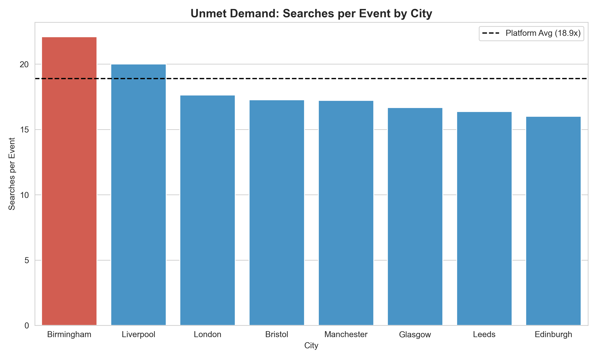
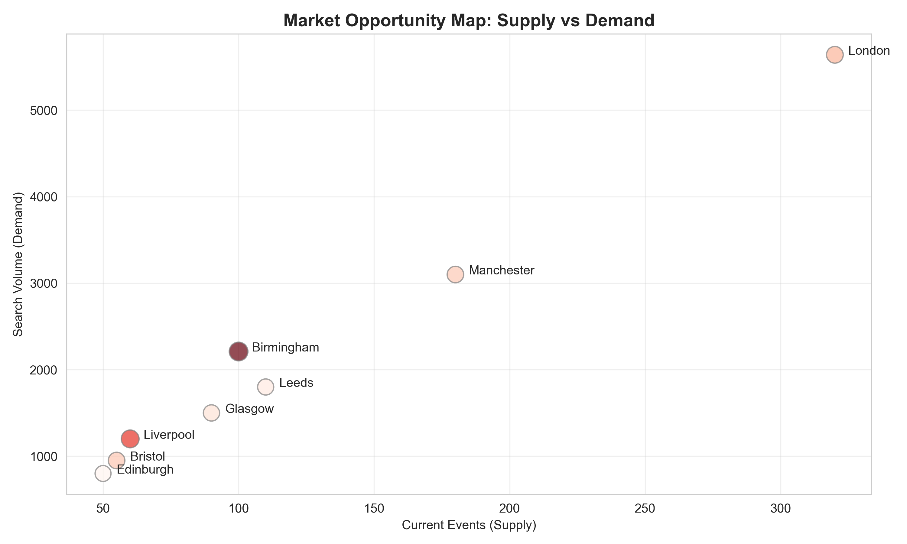
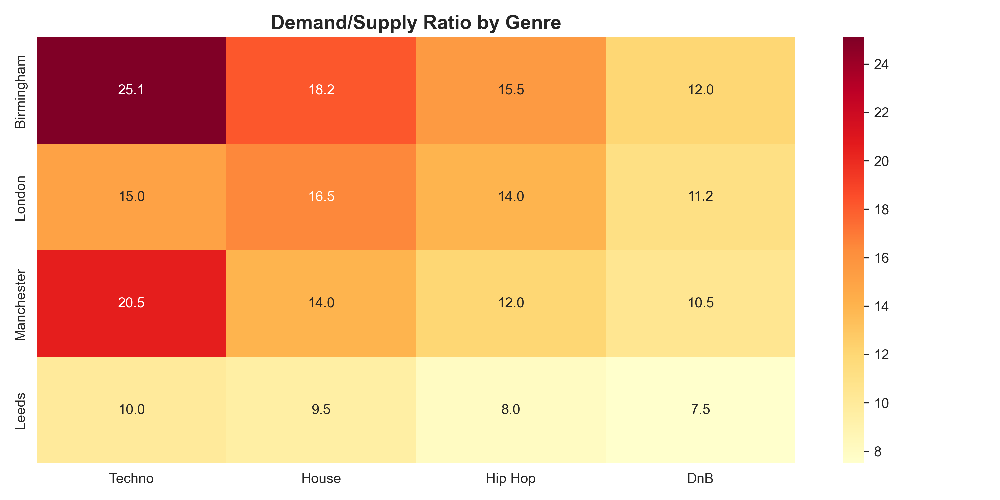

View Code →01 GEOGRAPHIC DEMAND ANALYSIS
WHERE IS DEMAND OUTPACING SUPPLY?
An event discovery platform expanding into UK markets needed to prioritize geographic investment. With limited partnership budget (£500K), leadership asked: which cities show highest unmet demand?
I mapped user search behavior against event listings across 8 UK cities to identify underserved markets. Birmingham shows the highest unmet demand—22.1× searches per event, 17% above the 18.9× platform average.

This pattern held stable across 6+ months and multiple genres (Techno, House, Electronic), suggesting structural undersupply rather than temporary spike. The gap represents £127K annual revenue opportunity if closed with 20 targeted events.
WHY THIS METHOD?
Ratio analysis over absolute volume: Normalizes for city size. Birmingham with 2,210 searches and 100 events (22.1:1) is more underserved than London with 5,640 searches and 320 events (17.6:1), even though London has higher absolute volume.
Alternative considered: Absolute search ranking would bias toward London/Manchester, missing high-growth opportunities in mid-sized markets where we could establish early-mover advantage.

WHAT TO DO
Phase 1 (8 weeks): Test Birmingham with pilot program
- Partner with 3-5 local promoters for 20 events
- Track: Search-to-ticket conversion, repeat booking rate, customer acquisition cost
- Success criteria: >12% conversion (vs 8% platform avg), <£15 CAC, >25% repeat rate
- Investment: ~£8K (partnership fees + localized marketing)
If successful: Scale to 100+ annual Birmingham events (£127K revenue opportunity)
If unsuccessful: Survey non-converters to understand barriers before further investment
CRITICAL LIMITATION
High search volume correlates with unmet demand but doesn't prove it without testing.
Alternative explanations: Users may search repeatedly because (1) existing events don't appeal (quality issue), (2) prices are too high (elasticity issue), or (3) searches are for event types not in our catalog (genre mismatch).
Randomized pilot testing needed to establish causality. Current analysis is correlational only.